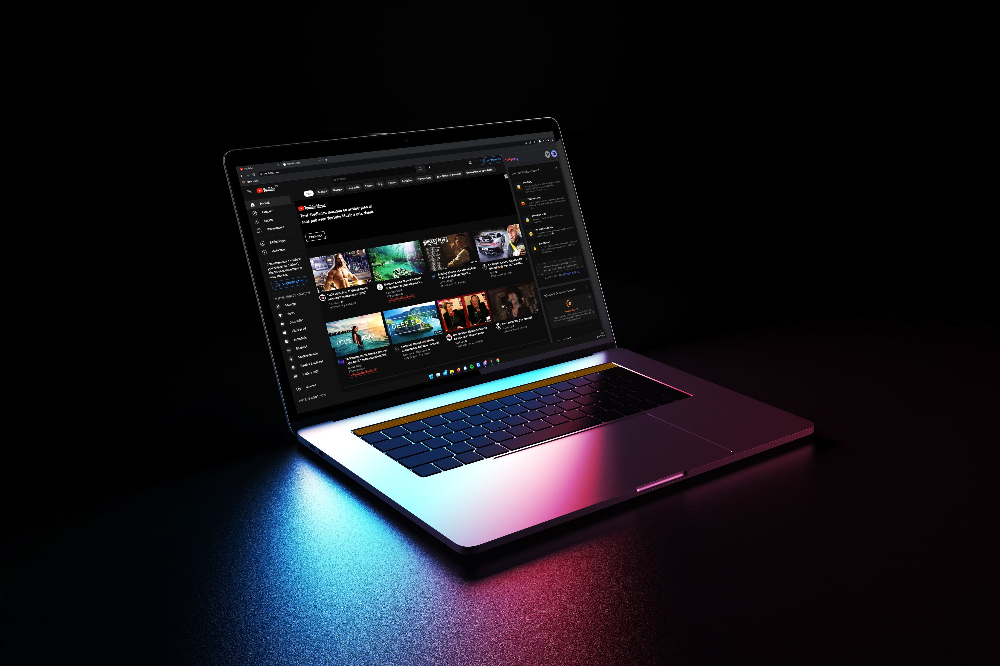
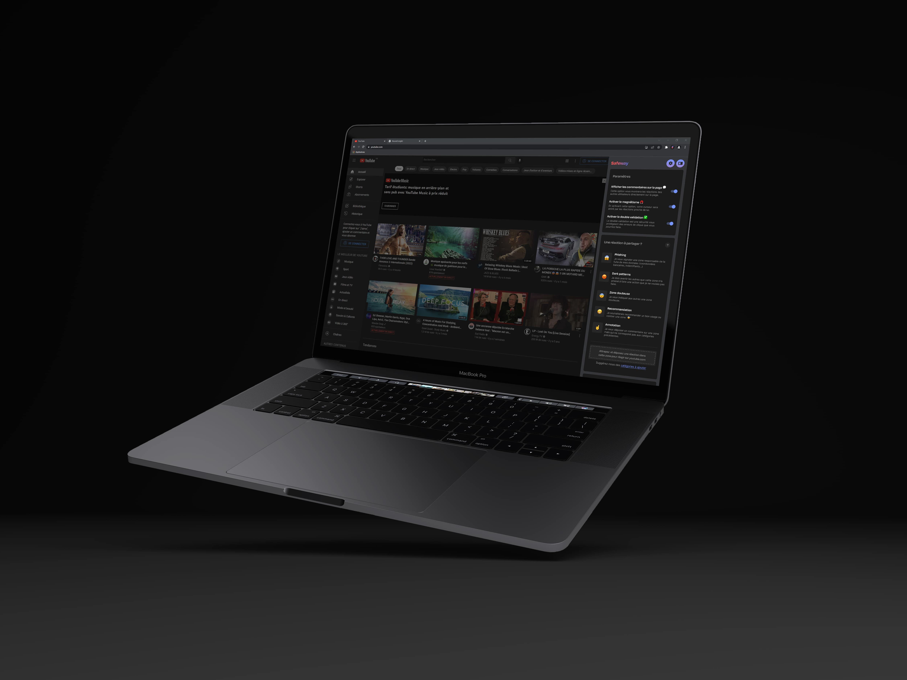

Thesis project : Safeway
This project is a continuation of the thesis I wrote in the last year of the DN MADe Numérique in
Villefontaine. The theme of this dissertation was "Escaping the manipulation of social networks" I was
particularly interested in the problem of data protection.
I then decided to create a web extension
whose principle is to accompany the users during their navigation. To do this, I decided to base myself on a
community and participative system where users come and post reactions directly on a web page to point out
to others different problems and thus educate and inform.

